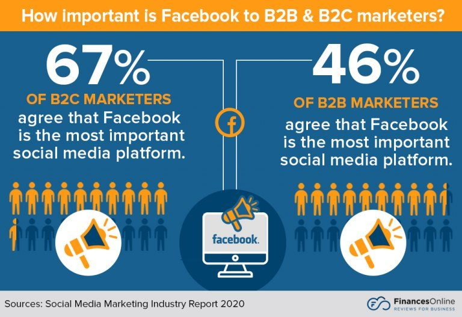
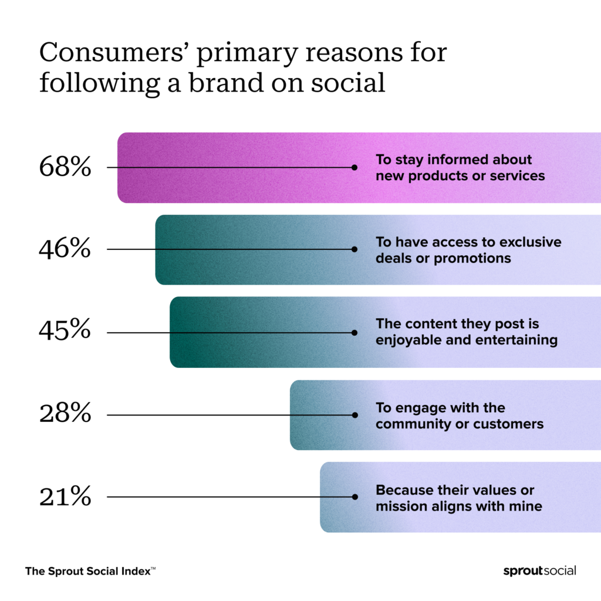
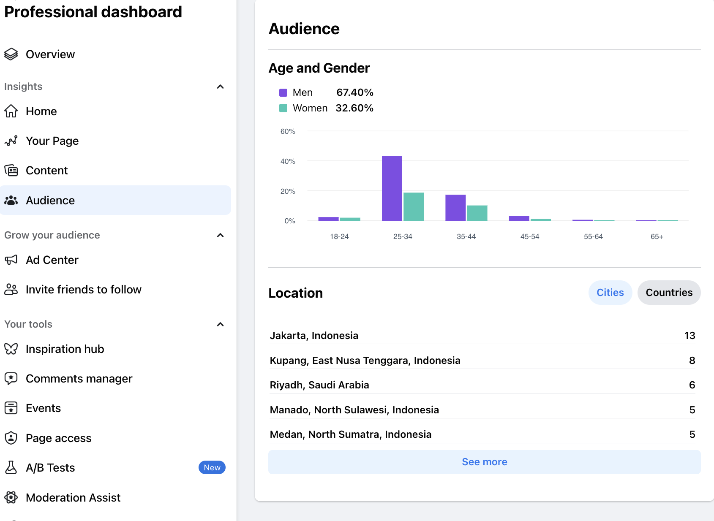

Introduction - Working on Facebook
Facebook is a social media platform that was founded by Mark Zuckerberg
and his college roommates in 2004. It began as a way for Harvard
University students to connect online and has since grown into one of
the largest social networks worldwide.
The platform allows users to:
- Connect with friends, family, and communities globally.
- Share photos, videos, and updates about their lives.
-
Join groups and events based on shared interests or affiliations.
-
Follow and interact with public figures, businesses, and
organizations.
Facebook's basic goal is to facilitate communication and connections
between individuals and communities, regardless of geographical
boundaries. It aims to provide a platform where people can engage,
share, and discover content that matters to them.
The history of Facebook
1.1 Market Analysis in general
Facebook is used most after YouTube

Social media has become the tool through which most businesses want to
sell their products directly to customers (B2C) and/or to services or
other businesses (B2B)
what is B2B and B2C?

Some summarized key findings:
- Facebook remains the leading social media platform with over 2.74 billion active users monthly.
- Users spend an average of three hours per day on social networks and messaging, highlighting the significance of social media in daily life.
- Facebook is the second most visited website globally and has a significant impact on digital marketing and advertising.
- There are 9 million active advertisers on Facebook, with the platform generating $56.9 billion in advertising revenue by the third quarter of 2020.
- Video content is crucial on Facebook, with videos making up 15% of all content and contributing significantly to user engagement.
- Facebook’s global economic impact is substantial, including the creation of 3.1 million jobs in Europe and contributing $18.6 billion to the US GDP.
- Security remains a concern, with Facebook removing millions of fake accounts and harmful content to maintain community standards.
- Businesses benefit from Facebook by directly connecting with audiences, building communities, and promoting brands effectively.
Market Analysis with business POV
Why a business needs to have a Facebook page of their own and how it
will help their business?
- Direct customer engagement
- Cost-effective marketing
- Analytics and insights
- Direct feedback

Facebook Audience Insights gives you aggregated information about two groups of people – people connected to your Page and people on Facebook – so you can create content that resonates and easily find more people like the ones in your current audience.
also gets the excess for data to use
Facebook's Audience Insights tool.
